cyberfugue · iPhone, iPad and Android
Realms of Oz
Step through the cyclone into the Land of Oz. L. Frank Baum’s The Wonderful Wizard of Oz, with every one of W. W. Denslow’s pictures of 1900, The Marvelous Land of Oz, with every one of John R. Neill’s pictures of 1904, Ozma of Oz, Dorothy and the Wizard in Oz, The Road to Oz, The Emerald City of Oz, The Patchwork Girl of Oz, Tik-Tok of Oz, The Scarecrow of Oz, Rinkitink in Oz, The Lost Princess of Oz, The Tin Woodman of Oz, The Magic of Oz and Glinda of Oz, with every one of Neill’s pictures of 1907 to 1920: all fourteen of Baum’s books of Oz, each complete and read aloud by either of two LibriVox readers with each word lit as it is spoken.
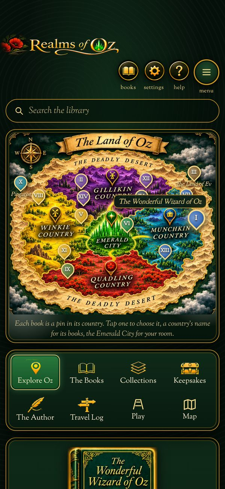
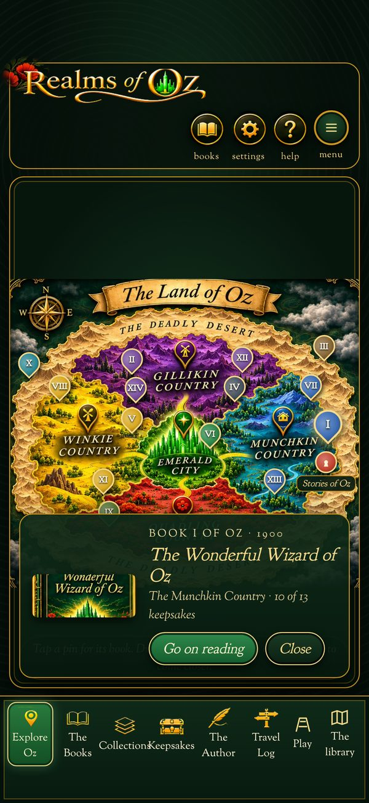
The trailers
Three short films of the app, in Baum’s own words.
Three ways to see Oz
Beside the text, Oz is shown the way you choose, and follows the reading paragraph by paragraph: Storybook, the first edition’s own pictures waking at the words; Walk into Oz, Oz in three dimensions, the road of yellow brick under your feet and the company walking ahead; or Paper theatre, a toy theatre whose scenery pans and whose players step forward as they speak. Tap anyone in Oz to hear one of their own lines; ride the Gump, the Saw-Horse and the Cowardly Lion, call the Winged Monkeys with the Golden Cap, and say the Magic Word.
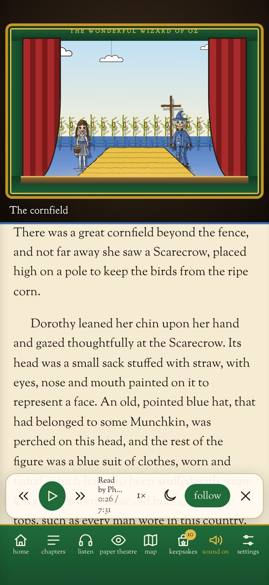
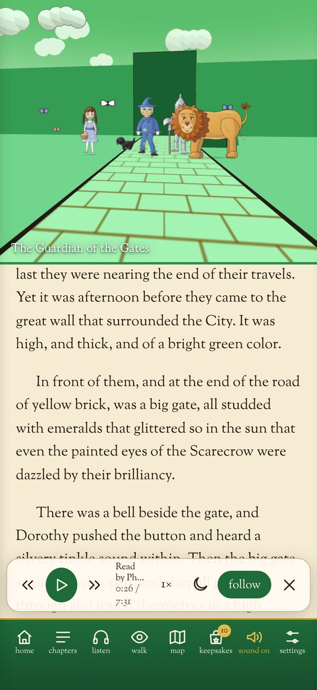
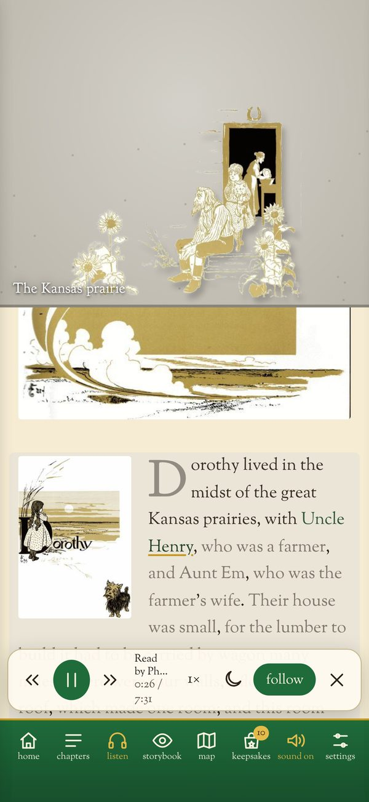
Keepsakes for your room
Forty-five keepsakes sparkle where Baum tells of them: the Silver Shoes, the Tin Woodman’s oil-can, the Golden Cap, Jack Pumpkinhead’s head, the pepper-box of the Powder of Life, Billina’s egg, the Nome King’s magic belt, the shaggy man’s Love Magnet, the six-leaved clover, the dragon Quox’s golden locket, the Pink Pearl of Pingaree, Cayke the Cookie Cook’s diamond-studded dishpan, the Magic Flower in its golden pot, a Flathead’s can of brains and more. Some are earned by doing: oiling the Woodman, saying the charm of the Cap, counting seventeen by twos with a wishing pill, throwing Billina’s egg at the Nome King, winding up Tik-Tok, pulling King Rinkitink out of the well, cutting Ozma’s birthday cake.
Set them out in your own room in the Emerald City, outside the books: on the mantel of the emerald fireplace, the sill of the window onto the City, the carved table and the gilt cabinet, with an alcove for each book that opens when you find its first keepsake.
The Wizard’s workshop and Who’s Who in Oz
Beside your room is the Wizard’s workshop, where the magic things you have found can be tried on whatever stands on the bench: the Powder of Life on the saw-horse or the sofa, the oil-can on the Tin Woodman, an egg on a Nome. What happens is what Baum says happens, in his own words, and every experiment is written in the Wizard’s notebook.
Who’s Who in Oz is an encyclopedia of the people of Oz and a bestiary of its creatures, a hundred and fourteen of them, from Dorothy and the Scarecrow to the Woozy, the Scoodlers and the Su-dic of the Flatheads: each with a portrait, a biography, friends and enemies, how much they are in each of the fourteen books, and what becomes of them book by book. What happens in a book you haven’t begun stays covered until you choose to see it.

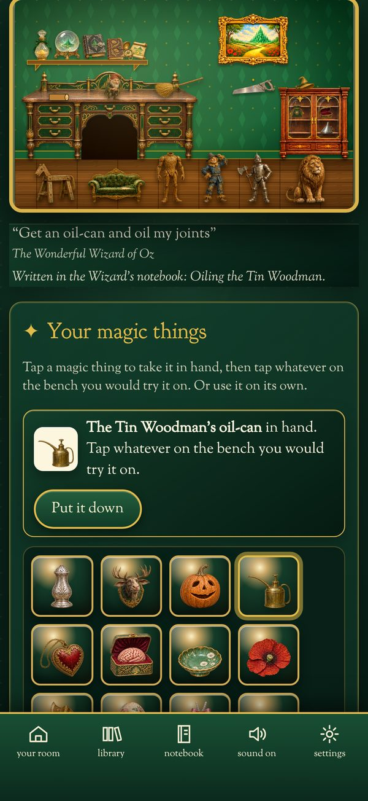
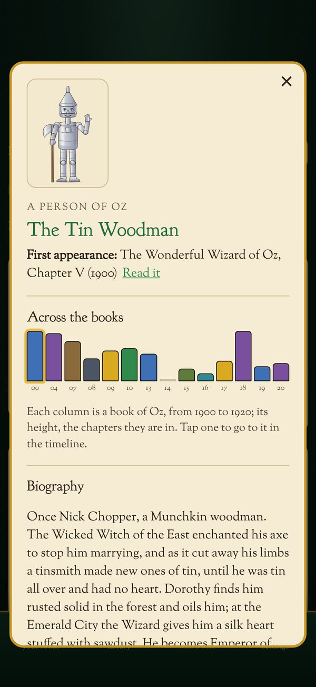
Stories of Oz, a game across all fourteen books
Stories of Oz is an adventure through every one of Baum’s books of Oz, in fourteen acts, one for each book: from the cyclone over the gray Kansas prairie and the road of yellow brick, through Tip’s flight on the Gump, the Nome King’s ornaments, the glass city of the Mangaboos, Ozma’s birthday party, Ojo’s search for the magic cure, the Metal Forest, Jinxland, the three pearls of Pingaree, the hunt for the lost Princess and the Magic Word, to the sunken island of the Skeezers. Hand-drawn pixel art, seen from above at a slant, with day and night and the weather.
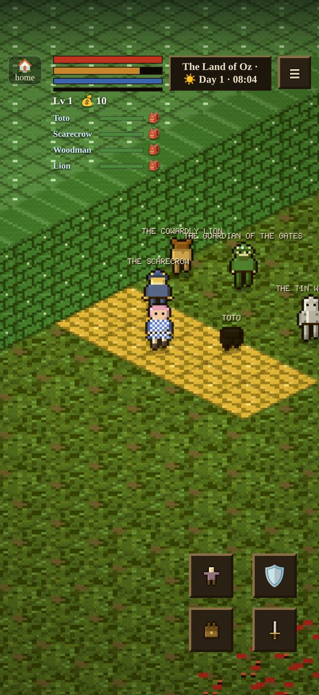
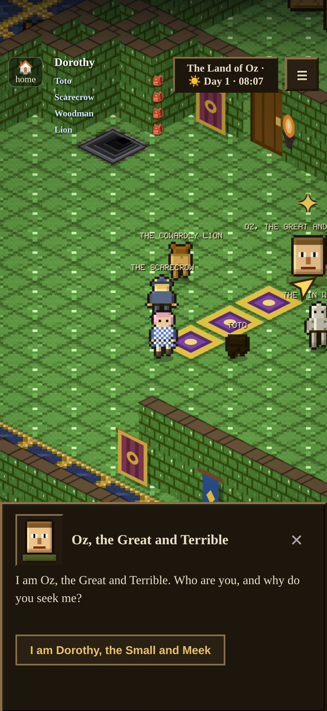
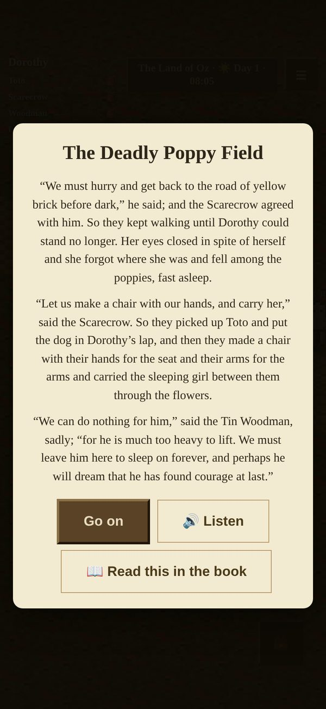
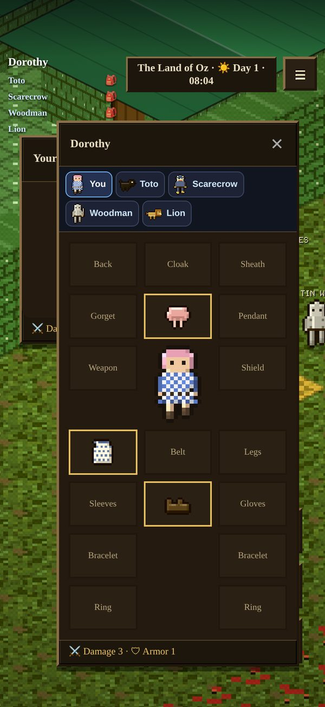
- Two ways to play. In The Tellings you are each book’s own hero: Dorothy, then Tip, Ojo, Betsy, Trot, Prince Inga, Woot and the rest. In The Traveller you are a child of your own from the next farm in Kansas, carried off by the same cyclone, who walks beside every story.
- Oz as Baum tells it. Talk with everyone you meet by tapping what you would say; the story’s great moments (the poppy field, the Fighting Trees, the Scoodlers, the Gargoyles) are told on a card in Baum’s own paragraphs. Foes are routed, never slain.
- Never lost. What now? always says the next step of the story, a gold ✦ floats over whoever has something new to say, an arrow at the screen’s edge points the way, and the map shows the land as you have walked it, with the next step as a gold star.
- A Land of Oz that changes from book to book. The Emerald City’s shops sell their green things for the Guardian’s green pennies in the first act and give freely after; the Palace of Oz is the Wizard’s, then the Scarecrow’s, then General Jinjur’s, then Ozma’s, on four floors and a treasury; the Tin Woodman’s tin castle, Jack Pumpkinhead’s pumpkin house and the Scarecrow’s corn-ear mansion stand from their own books, and friends come to live in Oz as Baum has them.
- The game and the books together. Every story card has Read this in the book, which opens the book at the chapter it tells, and Listen where it is Baum’s own words, read in the book’s own recording with each word lit. A book the game has reached offers Play this in Stories of Oz. A keepsake found in the game is the same keepsake as in the book, and waits in your room.
- Play an act again, any act you have reached, and come back to where you left off. Three saved games of your own; on iPhone and iPad they are kept in your iCloud too, so another iPhone or iPad carries on.
- When the last act is done, Oz stays open: everyone from every book at home, and the Magic Belt to wish you anywhere in Oz, or to make you any of the heroes.
On iPhone Duo
Open the phone and the book opens as a storybook, Oz spread over the whole page and settling at the same word; in Stories of Oz the inner display becomes Ozma’s Magic Picture, its gilt frame flaring round a wider view of Oz.
What is free
Chapter I of each book is free, and in Stories of Oz Kansas, the cyclone and the Munchkins’ meadow. The whole book is one purchase ($1.99 in the US), and opens that book’s act of the game too; All the books of Oz ($19.99) opens every book, all of Stories of Oz and everything else in the app, including every book added later. Nothing is collected about you.
Made from Baum’s text and the first editions’ pictures, which are in the public domain. Support · Privacy